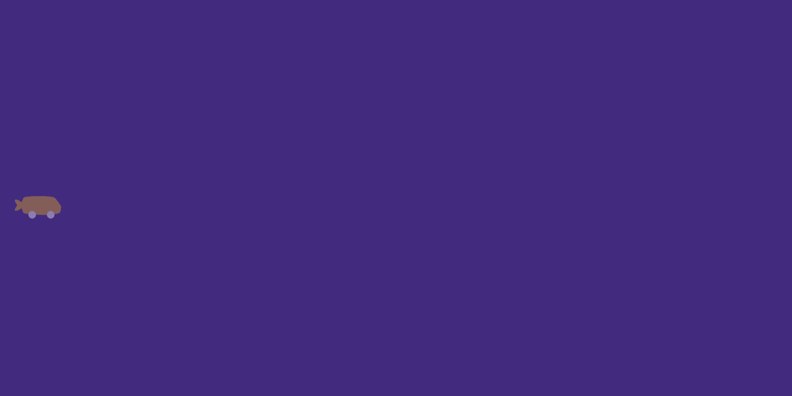
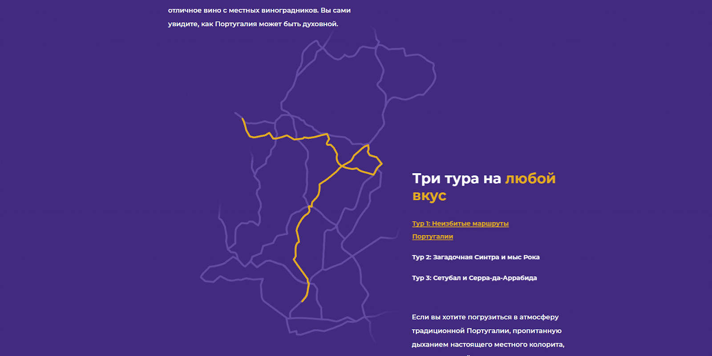
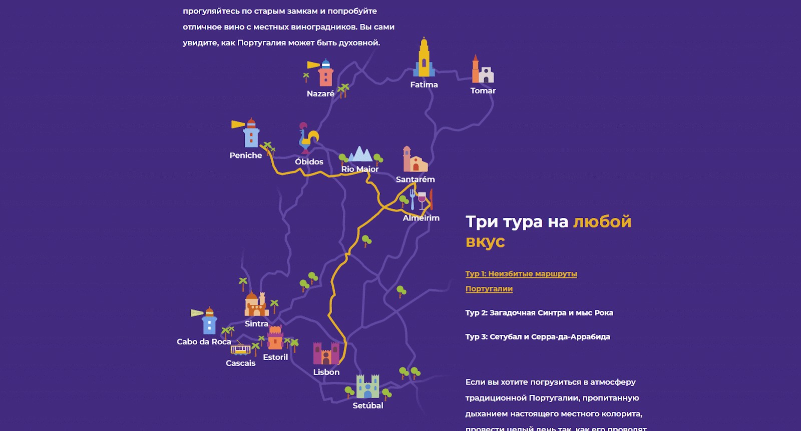
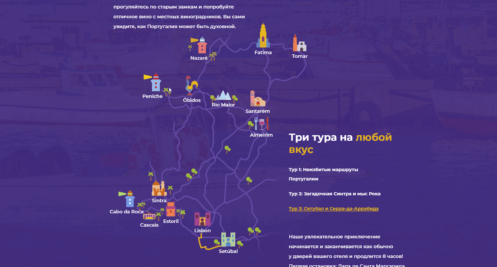
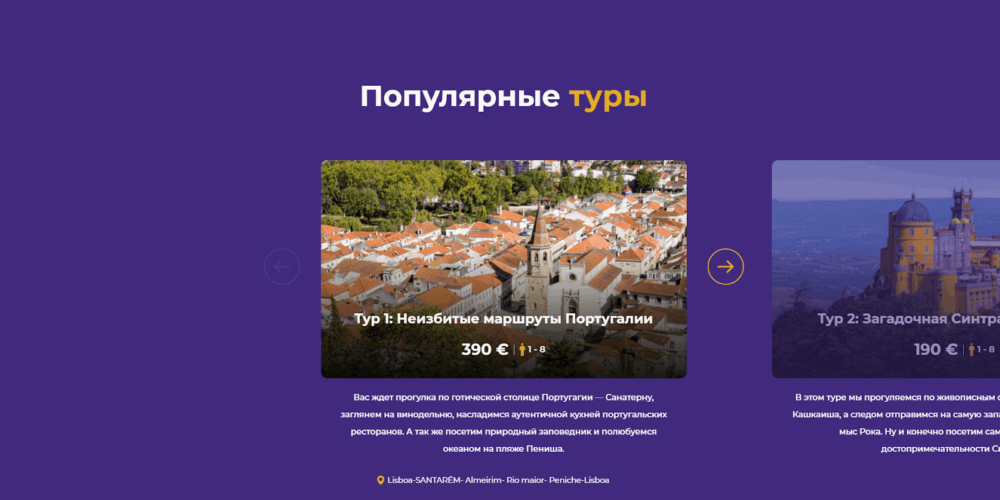
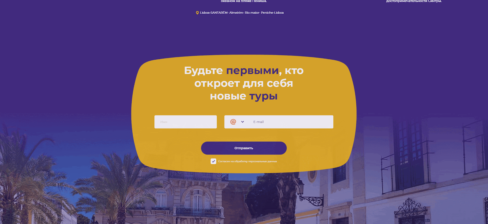
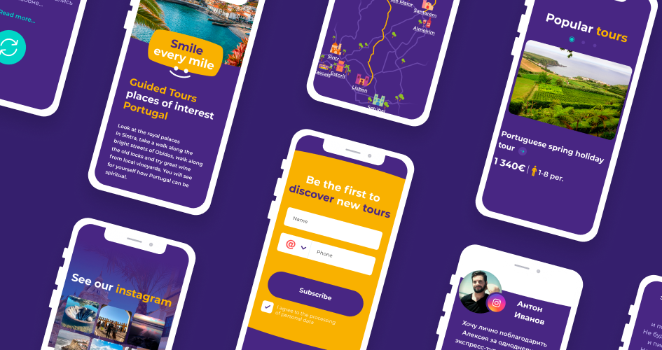
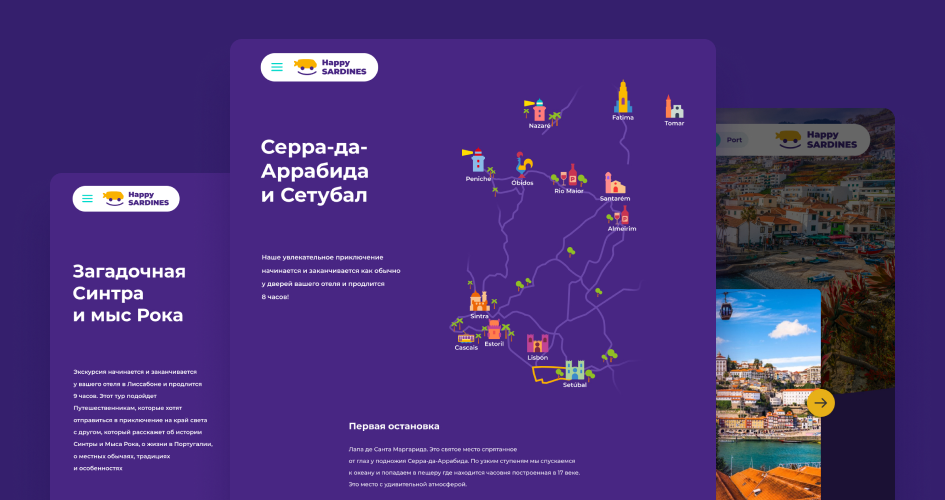
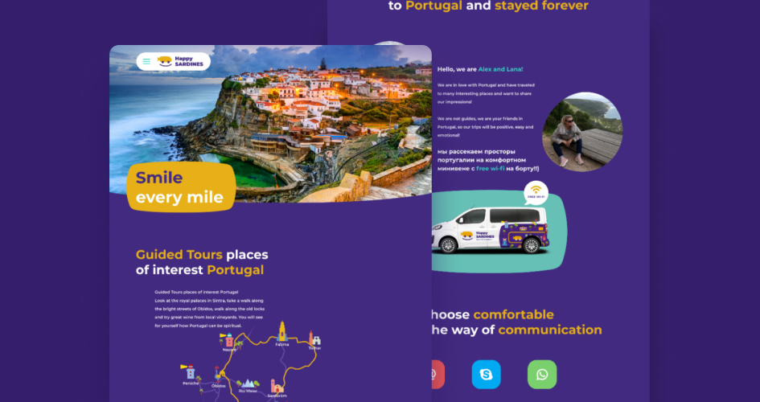

О проекте
Цели проекта
- Модульность и интерактивность при выборе туров
- Предусмотреть раздел с информацией о каждом туре и городе.
- Обеспечить корректную работу на мобильных устройствах и планшетах.
- Сделать сайт на 2х языках — русском и английском.
Дизайн
У заказчика был брендбук, и поэтому в дизайне мы использовали его фирменные цвета, нарисовали иконки, подобрали море фотографий.
Прелоадер

Интерактивная карта Португалии

Переключение маршрутов
В админке сайта выбираем точки и карта строится автоматически.

Фотогалереи городов
При наведении на город на фоне блока появляется его главная фотографии. При клике на город можно посмотреть фотогалерею достопримечательностей.

Выбор тура
Цена за группу от 2 до 8 человек. Можно перейти в карточку и посмотреть описание тура, а также фотографии городов, входящих в состав тура.

Форма, блок об агентстве, контакты
Не хотите оставлять телефон или почту? Не проблема. Можно оставить свой профиль Instagram и вам напишут в Direct.
Прочитайте, как можно влюбиться в страну, посетив её однажды и оставшись тут навсегда.
Свяжитесь любым удобным способом и узнайте подробности туров!

Элементы дизайна



Заключение
В итоге у нас получился качественный и успешный проект, с большим количеством анимации и графики.
Результат — это целое путешествие, как и хотел заказчик, а страницы туров органично смотрятся на фоне главной и не уступают ей по дизайну.
Посмотреть сайт можно по этой ссылке.